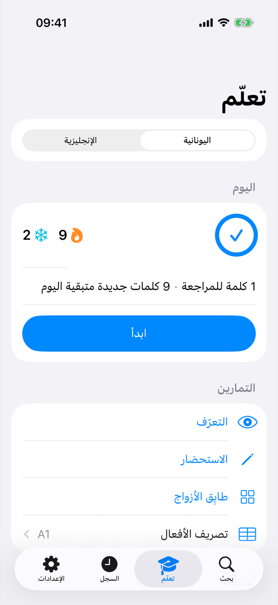
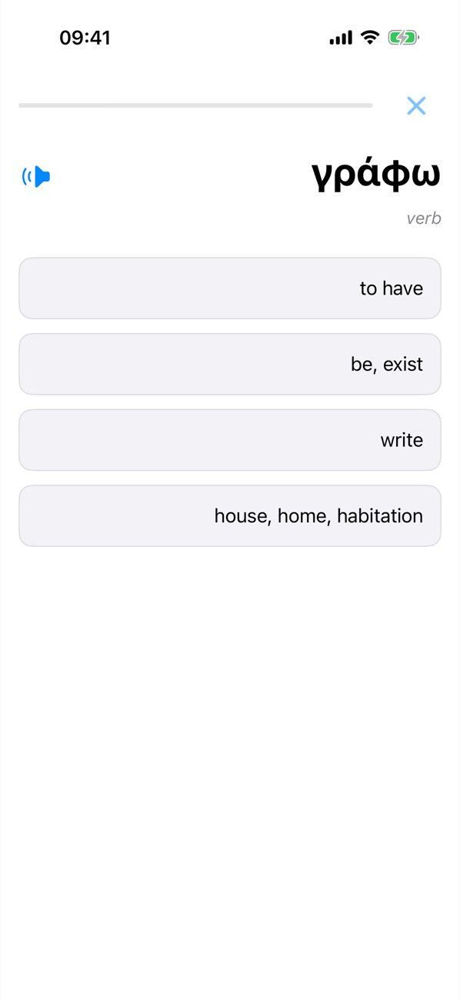
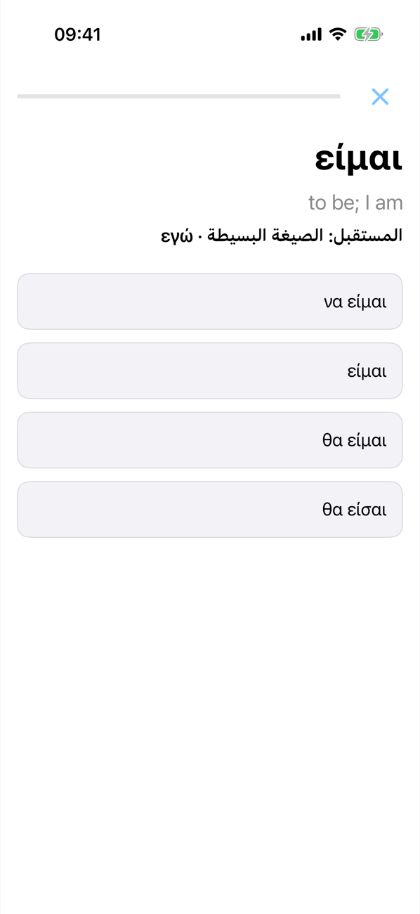
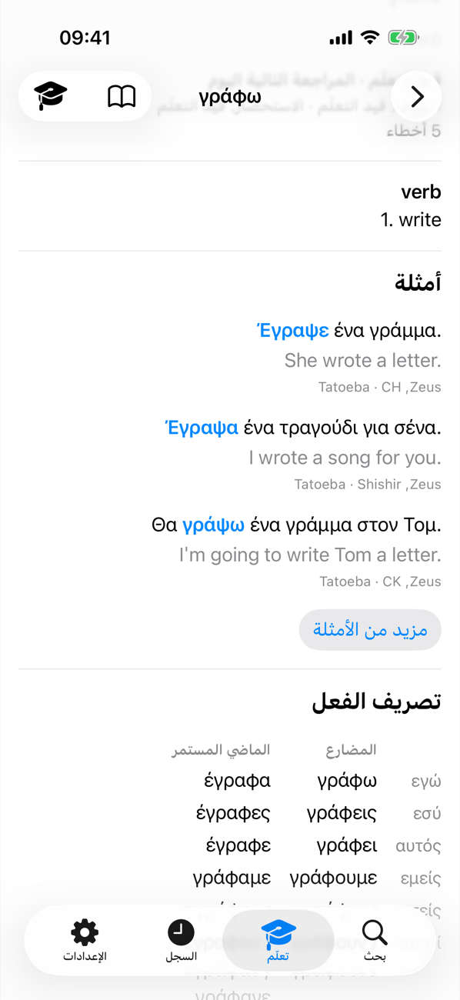
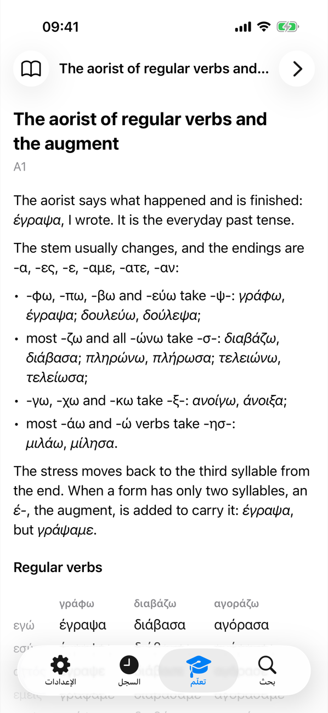

LibreDict
قاموس يعمل دون اتصال ويساعدك على تعلّم الكلمات
LibreDict قاموس سريع وخفيف للإنجليزية واليونانية والإسبانية والروسية والعربية. ابحث عن كلمة ثم تعلّمها.
القاموس
الإنجليزية مضمّنة، أما اللغات الأخرى فتُنزَّل مرة واحدة ثم تعمل دون اتصال. يجد البحث أي صيغة متصرّفة (البحث عن έγραψα يعطي γράφω)، وتعرض الكلمات اليونانية جداول التصريف.
تعلّم
قوائم كلمات حسب المستوى (اليونانية A1–B1، الإنجليزية A1–C2) أو قوائمك أنت من CSV أو Anki أو Quizlet. تمرين يومي بالتكرار المتباعد وجمل أمثلة حقيقية.
القواعد
تدريب على تصريف الأفعال ومواضيع قصيرة في القواعد، واليونانية هي أول لغة تتوفر فيها.
الخصوصية
دون إعلانات أو حسابات أو تتبّع. كل شيء يبقى على جهازك.
لقطات الشاشة




